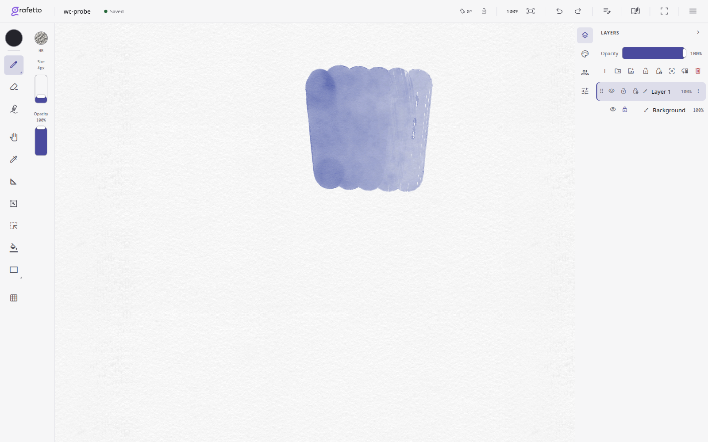
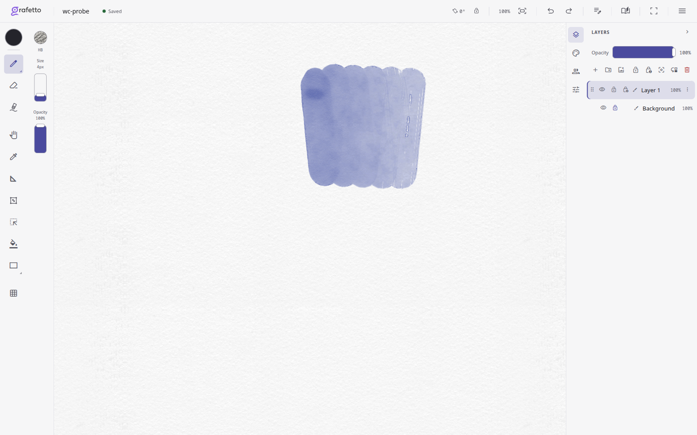
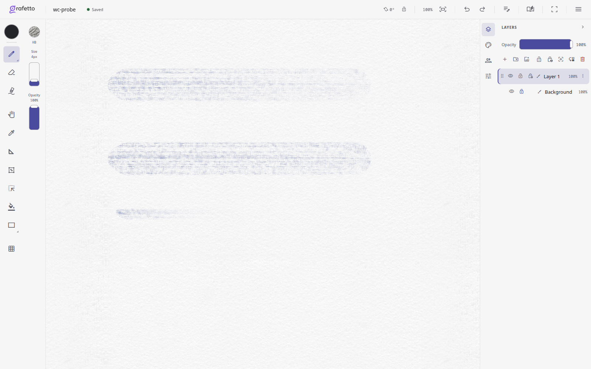
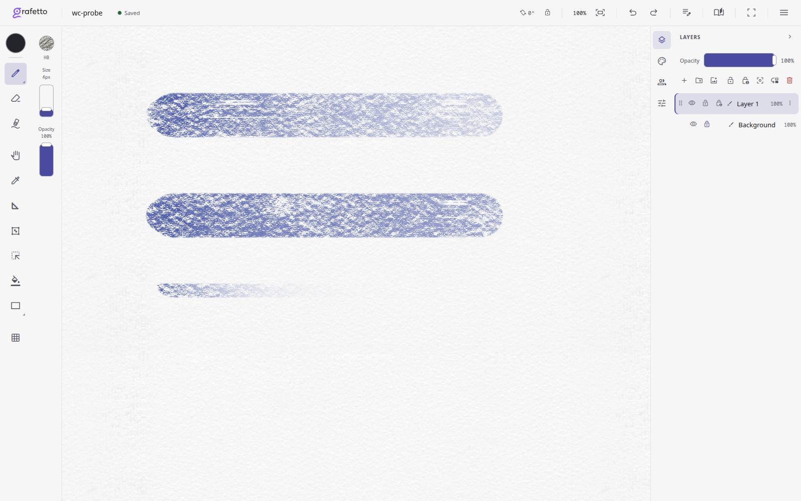
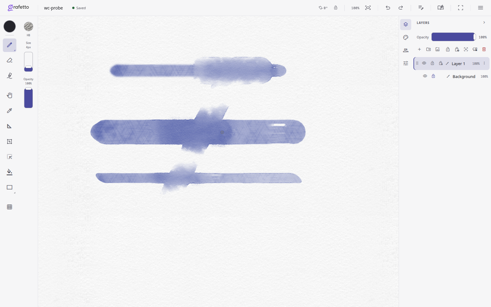

Версия e5d50e71. Свежие тестовые штрихи на Fine; повторы реальных мазков смотрите в основной галерее.
Слева в каждом снимке — чистая вода, справа — пигмент. Короткое торможение на повороте теперь не оставляет мгновенное максимальное скопление краски.


Контакт считается по высоте бумаги. Настройку по фотографиям сухой кисти ещё предстоит сделать.


Свежие круглая и плоская кисти в нижних двух строках. При отрыве продолжение сужается от последнего реального отпечатка. В старых повторах галереи дабы окончания уже записаны прежним движком.
